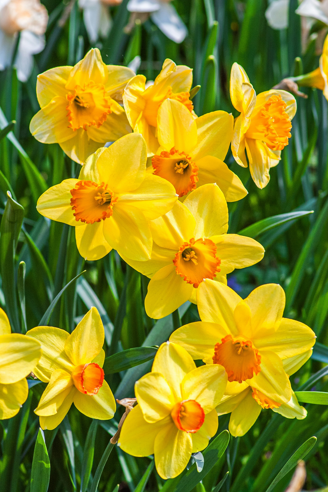

Daffodil
Narcissus
Daffodil is a bright spring flower known for its cheerful yellow or white petals and distinctive trumpet-shaped center. It brings a fresh and colorful look to gardens after winter.
Full Sun
Moderate
Well Drained
Spring
How to Care for Daffodil
Daffodils grow well with sunlight, moderate watering and soil that drains freely.
Sunlight
Give daffodils a sunny or lightly shaded location where they can receive good natural light.
Watering
Keep the soil moderately moist during active growth, while avoiding excessive water.
Soil
Use fertile, well-drained soil so excess water does not remain around the roots.
Maintenance
Allow the foliage to naturally fade after flowering so the plant can store energy for the next growing season.
How to Grow Daffodil
Daffodils are commonly grown from bulbs and can add beautiful spring color to gardens and containers.
Choose a Suitable Location
Select a location with good sunlight and soil drainage.
Prepare the Soil
Loosen the soil and make sure excess water can drain away easily.
Plant the Bulbs
Plant healthy daffodil bulbs at the appropriate depth and leave enough space between them.
Water and Wait for Growth
Water moderately and allow the plant to develop naturally as the season progresses.
Daffodil Fact 🌼
Daffodils are among the flowers strongly associated with the arrival of spring and are known for their bright trumpet-shaped blooms.